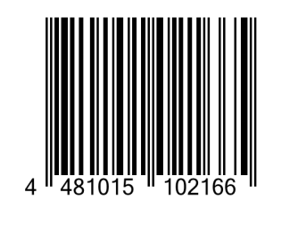
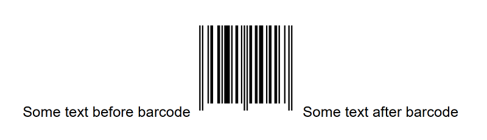
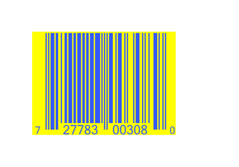
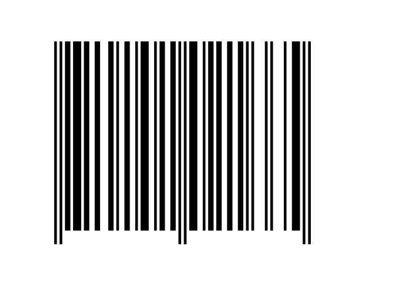
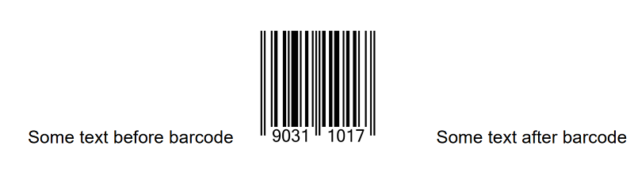
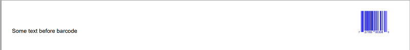

Adding Barcodes and QR Codes
Brief
The article describes how to add and configure barcodes and QR codes.
Details
You can add the most widely used UPC-A, EAN-13, and EAN-8 barcodes and QR codes to your documents.
Just pass a sequence of digits, specify the barcode type, and the library will automatically encode the barcode and generate the barcode image.
This feature is distributed as a separate free library Gehtsoft.PDFFlow.Barcodes that can be downloaded from NuGet.
To install the library, follow the instructions provided in the Installing PDFFlow Library article replacing
Gehtsoft.PDFFlowLib with Gehtsoft.PDFFlow.Barcodes.
Using barcodes
After the extension library is installed, you can add barcodes to a paragraph using
the AddBarcode() and AddBarcodeToParagraph() methods of
the BarcodeExtensions class. The methods also allow you to specify the color of lines, the background color,
and whether the code digits should be printed under the barcode lines or not.
By default, barcode lines are black on a white background, and the code digits are printed under the barcode lines.
To configure either or both of the colors, specify the parameters codeColor or backColor in a method for adding the barcode. Barcodes support both predefined colors and RGB colors created using the Color.FromRgba method.
To hide the barcode digits under the barcode lines, set the isPrintCode parameter to False.
The default barcode width is defined by the type of the barcode. Barcodes are generated as required by the international standards. For example, an EAN-13 barcode with the line width = 1 module (1X) will have
an empty left area of 11X, the left delimiter of 3X, the left part of the code containing six digits of 7X each, which makes 42X in total, a delimiter of 5X, the right part of the code of 42X,
the right delimiter of 3X, the right empty area of 7X. As a result, the total width is 113X.
So if you do not specify the width for an EAN-13 barcode, it will be 113 pixels by default.
You can specify your width in pixels, as for images and inline images, in the width parameter of the
AddBarcode() and AddBarcodeToParagraph() methods.
For EAN-8 barcodes, the barcode width is 81X. So if you need to have the line width equal to 1 pixel, you should set the barcode width to 81.
By default, the barcode height is calculated proportionally automatically according to the international standards, but you can cut it if necessary
using the cutHeight parameter of the AddBarcode() and AddBarcodeToParagraph() methods.
Also, you can configure the barcode margins using the methods of the BarcodeInlineBuilder class, for example
BarcodeInlineBuilder.SetMargins.
Using QR codes
A QR code is a type of matrix barcode. There is a bunch of methods that can be used for QR code generation: AddQRcode(),
AddQRcodeToParagraph(), AddQRcodeToSection(), AddQRcodeToRepeatingArea(), and AddQRcodeToCell().
QR codes can contain different kinds of data. With our extension library, you can easily add a QR code with an URL using
the method AddQRcodeUrlToParagraph.
When adding a QR code, you can configure the following settings:
QR code encoding method (currently only the Binary option is available)
QR code error correction (L, M, Q, H)
QR code version (1-40). The greater version you set, the larger QR code you get.
QR code scaling
QR code color
Background color
See also
Adding Content to Paragraph
Examples
Example 1. Add a barcode with default settings [show]
Example 1. Add a barcode with default settings [hide]
DocumentBuilder.New()
.AddSection()
.AddParagraph()
.AddBarcode("4810151021665", BarcodeType.EAN_13)
.ToDocument()
.Build("Result.pdf");
The above code will generate the following:

See the document
Example 2. Add a barcode with the hidden input data [show]
Example 2. Add a barcode with the hidden input data [hide]
DocumentBuilder.New()
.AddSection()
.AddParagraph("Some text before barcode")
.AddBarcodeToParagraph("90311017", BarcodeType.EAN_8, false)
.AddText("Some text after barcode")
.ToDocument()
.Build("Result.pdf");
The above code will generate the following:

See the document
Example 3. Add a barcode with specified colors [show]
Example 3. Add a barcode with specified colors [hide]
DocumentBuilder.New()
.AddSection()
.AddParagraph()
.AddBarcode("727783003089", BarcodeType.UPC_A, Color.FromRgba(0.2, 0.35, 1), Color.Yellow, true)
.ToDocument()
.Build("Result.pdf");
The above code will generate the following:

See the document
Example 4. Add a barcode with a specified width [show]
Example 4. Add a barcode with a specified width [hide]
DocumentBuilder.New()
.AddSection()
.AddParagraph()
.AddBarcode("4810151021665", BarcodeType.EAN_13, false, 200)
.ToDocument()
.Build("Result.pdf");

See the document
Example 5. Formatting a barcode using the methods of BarcodeInlineBuilder [show]
Example 5. Formatting a barcode using the methods of BarcodeInlineBuilder [hide]
DocumentBuilder.New()
.AddSection()
.AddParagraph("Some text before barcode")
.AddBarcode("90311017", BarcodeType.EAN_8)
.SetMarginLeft(10)
.SetMarginRight(30)
.ToParagraph()
.AddText("Some text after barcode")
.ToDocument()
.Build("Result.pdf");

See the document
Example 6. Using a barcode with a tabulation [show]
Example 6. Using a barcode with a tabulation [hide]
DocumentBuilder.New()
.AddSection()
.AddParagraph("Some text before barcode")
.AddTabSymbol()
.AddBarcode("727783003089", BarcodeType.UPC_A, Color.Blue, true, 80)
.ToParagraph()
.AddTabulationInPercent(100, TabulationType.Right)
.ToDocument()
.Build("Result.pdf");

See the document
Example 7. Add a QR code to a document [show]
Example 7. Add a QR code to a document [hide]
DocumentBuilder.New()
.AddSection()
.AddParagraph()
.AddQRcode("Some information for sharing",
QREncodingMethod.Binary,
QRcodeErrorCorrection.M,
4,
4)
.ToDocument()
.Build("Result.pdf");
The above code will generate the following:
See the document
Example 8. Add a QR code with an URL to a document [show]
Example 8. Add a QR code with an URL to a document [hide]
var colorDarkBlue = Color.FromHtml("#00008B");
var colorLightYellow = Color.FromHtml("#FFFFE0");
DocumentBuilder.New()
.AddSection()
.AddParagraph().AddUrl("https://www.pdfflow.io/").ToSection()
.AddParagraph().AddQRcodeUrlToParagraph("https://www.pdfflow.io/", 4,
colorDarkBlue, colorLightYellow)
.ToDocument()
.Build("Result.pdf");
The above code will generate the following:
 See the document
See the document
back